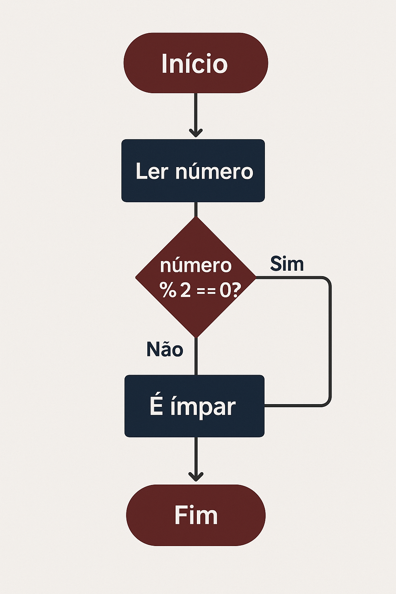

Lógica de Programação
Lógica de programação é um conjunto de regras e conceitos que orienta o computador a realizar tarefas. É a base para o desenvolvimento de software e é uma habilidade essencial para quem quer trabalhar com programação ou tecnologia.
Importância
A lógica de programação é a base para a criação de algoritmos...
A lógica de programação garante que cada instrução contribua...
A lógica de programação é a forma como o algoritmo é escrito...
Algorítimos
Um algorítmo é uma sequência finita de passos bem definidos que leva à resolução de um problema ou à execução de uma tarefa. Cada passo deve ser claro, não ambíguo e executável.
Exemplo: Fazer um bolo
- Pré-aquecer o forno;
- Separar todos os ingredientes;
- Misturar farinha, ovos, açúcar e fermento;
- Colocar em uma forma untada;
- Assar no forno por 40 minutos;
- Retirar do forno, deixar esfriar e servir;
Fluxogramas
Fluxogramas são diagramas que traduzem cada passo de um algoritmo em símbolos visuais:
- Oval:
- Início/Fim
- Retângulo:
- Processo ou Ação
- Losango:
- Decisão (Sim/Não)
- Flechas:
- Direção do fluxo
Exemplo prático:

Explicação:
- Começa;
- Pede um número;
- Vê se o número dividido por 2 sobra 0;
- Se sim, diz: "É par";
- Se não, diz: "É ímpar";
- Termina.